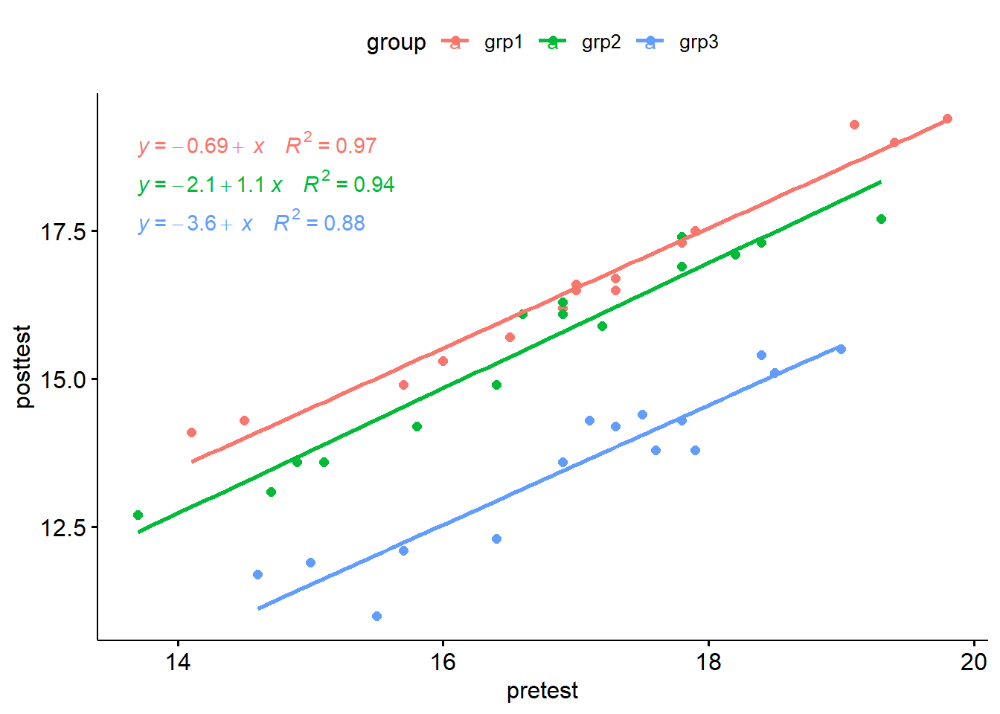
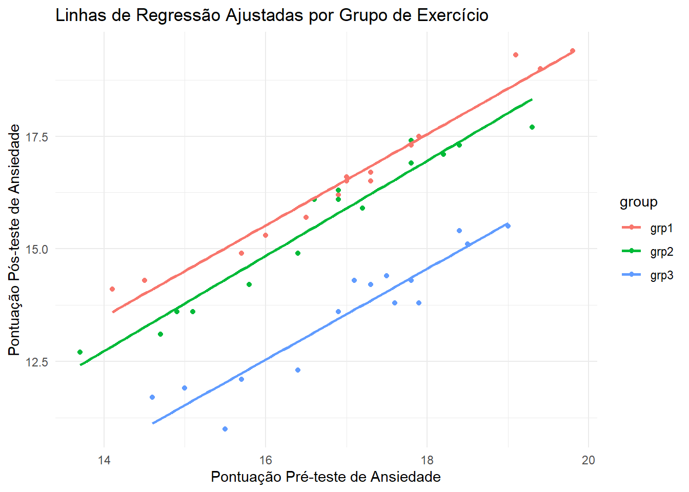
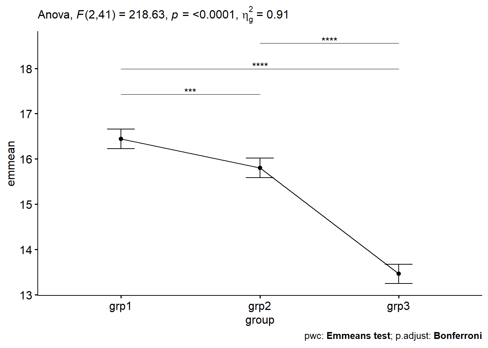

Código
# Carregar pacotes necessários
library(ggplot2)
library(dplyr)
library(knitr)
library(car)
library(kableExtra)
library(ggpubr)
library(rstatix)
library(broom)
library(datarium)# Carregar pacotes necessários
library(ggplot2)
library(dplyr)
library(knitr)
library(car)
library(kableExtra)
library(ggpubr)
library(rstatix)
library(broom)
library(datarium)A ANCOVA (Análise de Covariância) é uma técnica estatística que combina ANOVA e regressão linear para comparar as médias de grupos, controlando por uma ou mais covariáveis contínuas. Ela é particularmente útil em estudos onde fatores externos, como variáveis ambientais ou comportamentais, podem influenciar o desfecho1.
Por exemplo, pode-se comparar as “notas de teste” entre diferentes “níveis de escolaridade” (ensino médio, graduação, pós-graduação), ajustando pelo “tempo de estudo” (covariável). Nesse caso: 1) a nota do teste é a variável dependente; 2) o nível de escolaridade é a variável de agrupamento; e 3) o tempo de estudo é a covariável.
A ANCOVA de uma via é uma extensão da ANOVA que ajusta por covariáveis, enquanto a ANCOVA de duas vias avalia simultaneamente o efeito de duas variáveis independentes, ajustando por covariáveis.
Nesta abordagem, você aprenderá a:
Calcular e interpretar a ANCOVA no R
Verificar os pressupostos da ANCOVA
Realizar testes post-hoc para identificar diferenças entre os grupos
Visualizar os dados usando boxplots e adicionar p-valores da ANCOVA ao gráfico
Realizar uma ANCOVA utilizando dados sobre ansiedade (anxiety) do pacote datarium, demonstrando todas as etapas necessárias, desde a preparação dos dados dos dados até a interpretação dos resultados, incluindo os pressupostos da análise.
Vamos preparar nossos dados de demonstração a partir do conjunto de dados anxiety disponível no pacote datarium.
Pesquisadores investigaram o efeito de exercícios físicos na redução do nível de ansiedade. Para isso, conduziram um experimento onde mediram a pontuação de ansiedade de três grupos de indivíduos praticando exercícios em diferentes níveis (grp1: baixo, grp2: moderado e grp3: alto).
A pontuação de ansiedade foi medida antes (pré-teste) e 6 meses após os programas de treinamento de exercícios (pós-teste). Espera-se que qualquer redução na ansiedade proporcionada pelos programas de exercícios também dependa do nível basal de ansiedade dos participantes.
Nesta análise, utilizamos a pontuação de ansiedade do pré-teste como covariável e estamos interessados em possíveis diferenças entre os grupos em relação às pontuações de ansiedade do pós-teste.
# Carregar e preparar os dados
data("anxiety", package = "datarium")
# Selecionar variáveis de interesse e renomear as colunas
anxiety <- anxiety %>%
select(id, group, t1, t3) %>%
rename(pretest = t1, posttest = t3)
# Ajuste mínimo de valores
anxiety[14, "posttest"] <- 19 # Alterando um valor específico do grupo 1
# Amostrar 3 valores aleatórios por grupo
set.seed(123)
sampled_anxiety <- anxiety %>% sample_n_by(group, size = 3)
# Exibir a tabela formatada com kableExtra
sampled_anxiety %>%
kbl(caption = "Amostra de 3 valores por grupo") %>%
kable_classic(full_width = F, html_font = "Arial")| id | group | pretest | posttest |
|---|---|---|---|
| 15 | grp1 | 19.8 | 19.4 |
| 3 | grp1 | 15.7 | 14.9 |
| 14 | grp1 | 19.4 | 19.0 |
| 25 | grp2 | 17.2 | 15.9 |
| 17 | grp2 | 14.7 | 13.1 |
| 21 | grp2 | 16.4 | 14.9 |
| 41 | grp3 | 17.8 | 14.3 |
| 35 | grp3 | 16.4 | 12.3 |
| 34 | grp3 | 15.7 | 12.1 |
# Calcular as estatísticas descritivas para cada grupo no conjunto de dados anxiety
anxiety %>%
group_by(group) %>%
summarise(
`Pré-teste Médio` = mean(pretest, na.rm = TRUE),
`Pós-teste Médio` = mean(posttest, na.rm = TRUE)
) %>%
kbl(caption = "Estatísticas Descritivas por Grupo") %>%
kable_classic(full_width = F, html_font = "Arial")| group | Pré-teste Médio | Pós-teste Médio |
|---|---|---|
| grp1 | 17.08667 | 16.62000 |
| grp2 | 16.64667 | 15.52667 |
| grp3 | 17.01333 | 13.56000 |
Linearidade entre a covariável e a variável dependente em cada nível da variável de agrupamento. Isso pode ser verificado criando um gráfico de dispersão agrupado entre a covariável e a variável dependente.
Homogeneidade das inclinações das regressões. As inclinações das linhas de regressão, formadas pela covariável e a variável dependente, devem ser as mesmas para cada grupo. Essa suposição avalia se não há interação entre a covariável e a variável dependente. As linhas de regressão plotadas para os grupos devem ser paralelas.
A variável dependente deve ser aproximadamente distribuída de forma normal. Isso pode ser verificado usando o teste de normalidade de Shapiro-Wilk aplicado aos resíduos do modelo.
Homoscedasticidade ou homogeneidade da variância dos resíduos entre os grupos. Assume-se que os resíduos têm uma variância constante (homoscedasticidade).
Ausência de outliers significativos nos grupos.
Crie um gráfico de dispersão entre a covariável (ou seja, pré-teste) e a variável dependente (ou seja, pós-teste).
Adicione linhas de regressão, mostrando as equações correspondentes e o R² para cada grupo.
ggscatter(
anxiety, x = "pretest", y = "posttest",
color = "group", add = "reg.line"
) +
stat_regline_equation(
aes(label = paste(..eq.label.., ..rr.label.., sep = "~~~~"), color = group)
)Warning: The dot-dot notation (`..eq.label..`) was deprecated in ggplot2 3.4.0.
ℹ Please use `after_stat(eq.label)` instead.
ℹ The deprecated feature was likely used in the ggpubr package.
Please report the issue at <https://github.com/kassambara/ggpubr/issues>.
Interpretação:
Houve uma relação linear entre a pontuação de ansiedade do pré-teste e do pós-teste para cada grupo de treinamento, conforme avaliado por inspeção visual de um gráfico de dispersão.
Essa suposição verifica que não há interação significativa entre a covariável e a variável de agrupamento. Isso pode ser avaliado da seguinte forma:
# Executar o teste ANOVA para verificar a interação entre a covariável (pretest) e o grupo
anxiety %>%
anova_test(posttest ~ group * pretest)ANOVA Table (type II tests)
Effect DFn DFd F p p<.05 ges
1 group 2 39 209.314 1.40e-21 * 0.915
2 pretest 1 39 572.828 6.36e-25 * 0.936
3 group:pretest 2 39 0.127 8.81e-01 0.006Interpretação: Houve homogeneidade das inclinações das regressões, pois o termo de interação não foi estatisticamente significativo, F(2, 39) = 0,13, p = 0,88.
O que Acontece se a Homogeneidade de Regências Não for Atendida?
Se a homogeneidade de regências for violada, isto é, se as inclinações das linhas de regressão forem significativamente diferentes entre os grupos, as seguintes implicações ocorrem:
Interpretação Complicada: O efeito do fator não é consistente em todos os níveis da covariável, tornando difícil generalizar os efeitos do tratamento.
Resultados Enganosos: A ANCOVA pode subestimar ou superestimar os efeitos reais, levando a conclusões errôneas sobre a significância dos efeitos.
Alternativas Necessárias: A análise padrão de ANCOVA pode não ser apropriada, e outras abordagens devem ser consideradas.
Primeiro, você precisa ajustar o modelo usando a função lm(). No R, você pode facilmente aumentar seus dados para adicionar os valores ajustados e os resíduos usando a função augment(model) do pacote broom. Vamos chamar a saída de model.metrics, pois ela contém várias métricas úteis para diagnósticos de regressão.
library(broom)
# Ajustar o modelo, com a covariável (pretest) primeiro
model <- lm(posttest ~ pretest + group, data = anxiety)
# Inspecionar as métricas diagnósticas do modelo
model.metrics <- augment(model) %>%
select(-.hat, -.sigma, -.fitted) # Remover detalhes indesejados
# Mostrar as primeiras 3 linhas das métricas do modelo
head(model.metrics, 3)# A tibble: 3 × 6
posttest pretest group .resid .cooksd .std.resid
<dbl> <dbl> <fct> <dbl> <dbl> <dbl>
1 14.1 14.1 grp1 0.550 0.101 1.46
2 14.3 14.5 grp1 0.338 0.0310 0.885
3 14.9 15.7 grp1 -0.295 0.0133 -0.750Vamos agoa realizar o teste formal paea a normalidade dos resíduos, ou seja, o teste de Shapiro-Wilk.
# Avaliar a normalidade dos resíduos usando o teste de Shapiro-Wilk
shapiro_test(model.metrics$.resid)# A tibble: 1 × 3
variable statistic p.value
<chr> <dbl> <dbl>
1 model.metrics$.resid 0.975 0.444Interpretação: O teste de Shapiro-Wilk não foi significativo (p > 0,05), portanto, podemos assumir a normalidade dos resíduos.
A ANCOVA assume que a variância dos resíduos é igual para todos os grupos. Isso pode ser verificado utilizando o teste de Levene:
# Realizar o teste de Levene para verificar a homogeneidade da variância dos resíduos
model.metrics %>% levene_test(.resid ~ group)# A tibble: 1 × 4
df1 df2 statistic p
<int> <int> <dbl> <dbl>
1 2 42 2.27 0.116Interpretação: O teste de Levene não foi significativo (p > 0,05), portanto, podemos assumir a homogeneidade das variâncias dos resíduos para todos os grupos.
Um outlier é um ponto que possui um valor extremo para a variável dependente. A presença de outliers pode afetar a interpretação do modelo.
Outliers podem ser identificados examinando o resíduo padronizado (ou resíduo studentizado), que é o resíduo dividido pelo seu erro padrão estimado. Resíduos padronizados podem ser interpretados como o número de erros padrão de distância da linha de regressão.
Observações cujos resíduos padronizados são maiores que 3 em valor absoluto são possíveis outliers.
# Filtrar observações cujos resíduos padronizados são maiores que 3 em valor absoluto
outliers <- model.metrics %>%
filter(abs(.std.resid) > 3) %>%
as.data.frame()
# Exibir os outliers
outliers[1] posttest pretest group .resid .cooksd .std.resid
<0 linhas> (ou row.names de comprimento 0)Não houve outliers nos dados, conforme avaliado pela ausência de casos com resíduos padronizados maiores que 3 em valor absoluto.
A ordem das variáveis é importante ao calcular a ANCOVA. Você deve remover o efeito da covariável primeiro – ou seja, deve controlá-la – antes de inserir sua variável principal de interesse.
# Realizar a análise de variância ANCOVA com as variáveis pretest (covariável) e group
res.aov <- anxiety %>% anova_test(posttest ~ pretest + group)
# Obter a tabela ANOVA
get_anova_table(res.aov)ANOVA Table (type II tests)
Effect DFn DFd F p p<.05 ges
1 pretest 1 41 598.321 4.48e-26 * 0.936
2 group 2 41 218.629 1.35e-22 * 0.914Após o ajuste para a pontuação de ansiedade do pré-teste, houve uma diferença estatisticamente significativa na pontuação de ansiedade do pós-teste entre os grupos, F(2, 41) = 218,63, p < 0,0001.
# Gráfico das linhas de regressão ajustadas
ggplot(anxiety, aes(x = pretest, y = posttest, color = group)) +
geom_point() +
geom_smooth(method = "lm", se = FALSE) +
labs(
title = "Linhas de Regressão Ajustadas por Grupo de Exercício",
x = "Pontuação Pré-teste de Ansiedade",
y = "Pontuação Pós-teste de Ansiedade"
) +
theme_minimal()`geom_smooth()` using formula = 'y ~ x'
Comparações pareadas podem ser realizadas para identificar quais grupos são diferentes. A correção de múltiplos testes de Bonferroni é aplicada. Isso pode ser facilmente feito usando a função emmeans_test() do pacote rstatix, que é um wrapper em torno do pacote emmeans. O termo emmeans refere-se às médias marginais estimadas (também conhecidas como médias dos mínimos quadrados ou médias ajustadas).
# Comparações pareadas com ajuste de Bonferroni
library(emmeans)Welcome to emmeans.
Caution: You lose important information if you filter this package's results.
See '? untidy'library(rstatix)
pwc <- anxiety %>%
emmeans_test(
posttest ~ group, covariate = pretest,
p.adjust.method = "bonferroni"
)
# Exibir os resultados das comparações pareadas
pwc# A tibble: 3 × 9
term .y. group1 group2 df statistic p p.adj p.adj.signif
* <chr> <chr> <chr> <chr> <dbl> <dbl> <dbl> <dbl> <chr>
1 pretest*gr… post… grp1 grp2 41 4.24 1.26e- 4 3.77e- 4 ***
2 pretest*gr… post… grp1 grp3 41 19.9 1.19e-22 3.58e-22 ****
3 pretest*gr… post… grp2 grp3 41 15.5 9.21e-19 2.76e-18 **** # Exibir as médias ajustadas de cada grupo (emmeans)
emmeans_results <- get_emmeans(pwc)
# Mostrar as médias ajustadas
emmeans_results# A tibble: 3 × 8
pretest group emmean se df conf.low conf.high method
<dbl> <fct> <dbl> <dbl> <dbl> <dbl> <dbl> <chr>
1 16.9 grp1 16.4 0.106 41 16.2 16.7 Emmeans test
2 16.9 grp2 15.8 0.107 41 15.6 16.0 Emmeans test
3 16.9 grp3 13.5 0.106 41 13.2 13.7 Emmeans testOs dados são médias ajustadas +/- erro padrão. A pontuação média de ansiedade foi estatisticamente maior no grupo 1 (16,4 +/- 0,15) em comparação com o grupo 2 (15,8 +/- 0,12) e o grupo 3 (13,5 +/- 0,11), p < 0,001.
Uma ANCOVA foi realizada para determinar o efeito dos exercícios na pontuação de ansiedade, após controlar pela pontuação basal de ansiedade dos participantes.
Após o ajuste para a pontuação de ansiedade do pré-teste, houve uma diferença estatisticamente significativa na pontuação de ansiedade do pós-teste entre os grupos, F(2, 41) = 218,63, p < 0,0001.
A análise post-hoc foi realizada com ajuste de Bonferroni. A pontuação média de ansiedade foi estatisticamente maior no grupo 1 (16,4 +/- 0,15) em comparação com o grupo 2 (15,8 +/- 0,12) e o grupo 3 (13,5 +/- 0,11), p < 0,001.
# Visualização: gráficos de linha com valores de p
pwc <- pwc %>% add_xy_position(x = "group", fun = "mean_se")
ggline(get_emmeans(pwc), x = "group", y = "emmean") +
geom_errorbar(aes(ymin = conf.low, ymax = conf.high), width = 0.2) +
stat_pvalue_manual(pwc, hide.ns = TRUE, tip.length = FALSE) +
labs(
subtitle = get_test_label(res.aov, detailed = TRUE),
caption = get_pwc_label(pwc)
)
O gráfico da Figura 1 mostra os valores de ansiedade média por grupo, após correção dos valores de préteste.
# Obter as médias ajustadas e erros padrão
emmeans_results <- get_emmeans(pwc)
# Calcular as médias ± desvio padrão
summary_stats <- anxiety %>%
group_by(group) %>%
summarise(
mean = mean(posttest, na.rm = TRUE),
sd = sd(posttest, na.rm = TRUE)
)
# Visualização: gráficos de barras com letras de significância e médias ± desvio padrão
ggbarplot(emmeans_results, x = "group", y = "emmean",
add = "mean_sd",
position = position_dodge(0.8),
color = "group", fill = "group",
width = 0.6) +
geom_errorbar(aes(ymin = conf.low, ymax = conf.high),
width = 0.2,
position = position_dodge(0.8)) +
# Adicionar letras de significância em cima das barras
stat_pvalue_manual(pwc, hide.ns = TRUE, tip.length = FALSE) +
# Adicionar valores de média ± desvio padrão
geom_text(data = summary_stats, aes(x = group, y = mean + 0.5,
label = sprintf("%.2f ± %.2f", mean, sd)),
vjust = -0.5, size = 4) +
labs(
x = "Grupo",
y = "Pontuação de Ansiedade Pós-teste",
subtitle = get_test_label(res.aov, detailed = TRUE),
caption = get_pwc_label(pwc)
) +
theme_minimal()A ANCOVA realizada permite concluir que: